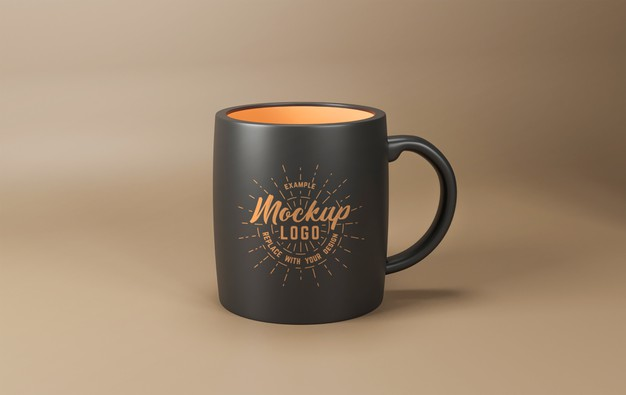
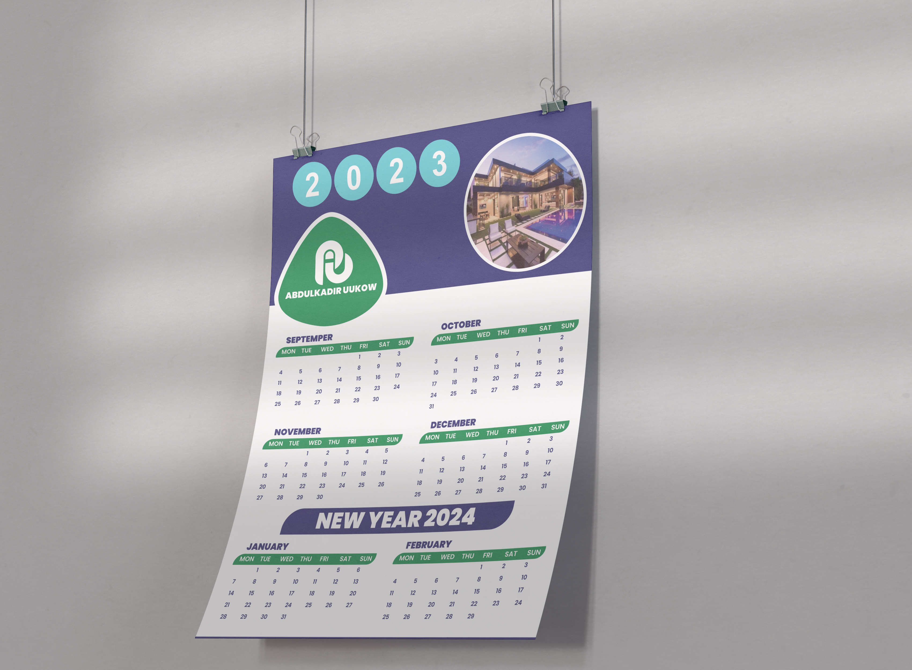

Software architecture
I design end-to-end systems with clear boundaries, scalable data models, and maintainable service layers that support long-term growth.
Expert software engineer · Mogadishu
I build production-grade software systems
I architect and deliver high-impact software systems across web, operations, and communication environments: robust data models, API-first backends, and resilient interfaces that teams can evolve confidently in complex, real-world settings.
// What I optimize for
const delivery = {
stack: ['JS', 'React', 'Flutter', 'PHP', 'Node', 'MySQL', 'AWS'],
goal: 'scalable systems and measurable outcomes'
};Profile
End-to-end engineering leadership from discovery and architecture to deployment, support, and iteration.
Expert software engineer · COO & systems builder
I'm an expert software engineer with multi-year experience delivering production systems for NGOs, institutions, and private companies. My work spans architecture, backend engineering, frontend and mobile delivery, operations support, and technical leadership. I build maintainable platforms with PHP/Node.js, MySQL, JavaScript, and Flutter, while supporting cloud, AI/ML, and communication workflows where cross-functional ownership is critical.
Capabilities
Senior-level execution across architecture, delivery, operations, and stakeholder communication.
I design end-to-end systems with clear boundaries, scalable data models, and maintainable service layers that support long-term growth.
React SPAs, responsive interfaces, and Flutter mobile app delivery for products that remain performant, intuitive, and reliable across devices.
Strong in API design, MySQL optimization, and reliable data workflows that power admin tools, reports, and operational software.
Leading project delivery, client communication, and team coordination from requirements to deployment and post-launch support.
Applying practical cloud, AI/ML, and automation knowledge to improve reliability, speed of delivery, and system capability.
Strong communication skills across stakeholders, with clear documentation, reporting, meeting records, and implementation guidance that accelerate delivery.
Skills & competencies
Capabilities listed under "Skills and attained" in my curriculum vitae — spanning engineering, ICT, media, documentation, and leadership.
Career
Roles from my curriculum vitae, listed in chronological order by start date. Engineering delivery, ICT leadership, and cross-functional communication across organizations in Somalia.
Media Women Network (MWN)
Uukow Technology Solutions (UTECH)
Galmudug Women Journalism Association
Banadir Training Institute (BTI)
Shipped
A focused set of systems, dashboards, and public web platforms built with practical architecture and maintainable UI.
Hotel operations system for reservations, billing, rooms, and staff workflows with structured MySQL data and fast operator screens.
Association operations platform for records, member workflows, communication, and admin visibility.
Frontend booking flow for cargo customer information, payment context, and service requests.
Marketing agency website with reusable React components and organized assets for future scale.
Public web presence for a Somalia-based NGO advocating for female journalists.
Environmental awareness platform for Somalia's green media hub.
E-commerce storefront serving Mogadishu with product-focused browsing and conversion paths.
Regional NGO site supporting women journalists in Galmudug State.
Company site for civil works, building design, planning, and management services.
Academic institution website with program structure, course content, and communication flows designed for public visibility and student access.
Corporate consultancy website for utility services, capacity building, and project communication with structured service and contact journeys.
Comprehensive property management software covering property, tenant, landlord, financial, maintenance, and analytics operations.
Integrated ERP platform for accounting, HR, payroll, inventory, sales, procurement, and reporting in one operational system.
Complete school management platform with academic, finance, HR, and communication modules plus native mobile experience support.
Flutter-based mobile application for media content access and digital engagement, published for Android users.
Education
Formal education and professional programs as listed on my curriculum vitae — aligned with continuous delivery in software engineering.
Accredited milestones that anchor engineering practice with structured study.
Vendor and platform credentials across cloud, engineering, media, and business systems.
Amazon Web Services (AWS)
Microsoft
Meta
Lund University
Meta
Udemy
Udemy
Udemy
Udemy
Udemy
Coursera
Kulmiye School
Kulmiye School
Visuals
Selected visuals — composition, UI surfaces, and brand-facing layout.




Collaborate
Share scope, deadline, and stack preferences — you'll get a straight answer on fit and next steps.
Send the goal, rough scope, deadline, and preferred stack. I'll reply with a practical plan and the fastest path to ship.